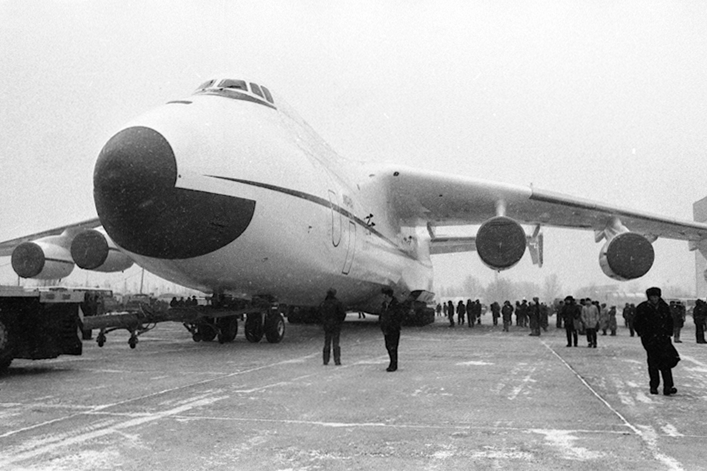

Двадцять першого грудня 1988 року відбувся перший політ дослідногозразка найбільшого у світі транспортного літака Ан-225 «Мрія»,створеного київським заводом «Антонов». Спочатку його будували длякосмічної галузі — він міг транспортувати ракети і слугувати «стартовиммайданчиком» для космічних кораблів. Але СРСР розпався, а «Мрію» докінця 1990-х законсервували в ангарі. На початку 2000-х її реконструювалита модифікували для перевезення надважких та надгабаритнихвантажівДосі існує лише один екземпляр Ан-225. Але він уже увійшов вісторію, встановивши близько 250 світових рекордів за швидкістю,висотою, вантажопідйомністю. Ан-225 з максимальною злітною масою 640т є найважчим літаком у світі. Для порівняння, третій завантажопідйомністю (після Ан-124 «Руслан») американськийвійськово-транспортний літак C-5 Galaxy має максимальну злітну масу 381т.
В серпні 1993 року на авіашоу МАКС-93 в Жуковському Ан-225 «Мрія»«виступав» уже з українським прапором на хвостовому оперенні табортовим номером UR-82060. Нині функціонує лише один літак Ан-225. Він надає комерційні послуги зперевезення надважких та нестандартних вантажів до 250 000 кілограмів.Будівництво другого Ан-225 було практично завершене в кінці 1980-х,згідно з радянською космічною програмою. З розпадом Радянського Союзуу 1990 і закриттям програми «Енергія-Буран» єдиний діючий Ан-225 булопоміщено в ангар, його двигуни було демонтовано для використання налітаках Ан-124. Другий близький до завершення Ан-225 було такожзаконсервовано й поміщено в ангар. На 2010 рік роботи над другимекземпляром не ведуться, однак поступово назріває необхідність йогодобудування. Конструкції планера постійно ревізуються й подовжується їхресурс.

У кінці 1980-х радянський уряд шукав шляхів отримання зиску віддосягнень своєї військової промисловості. У 1989 АНТК Антоновастворила холдингову компанію з надання послуг із перевезень важкихвантажів під назвою «Авіалінії Антонова», що містилась у Києві, апрацювала з аеропорту Станстед поблизу Лондона.26 травня 2001 рокуАн-225 отримав сертифікат типу від Авіаційного Реєстру МіждержавногоАвіаційного Комітету. Перший комерційний політ «Мрія» здійснила 31січня 2002 року зі Штутгарта до королівства Оман із вантажем 187,5 тоннхарчових продуктів для американських військових, розташованих україні.Можливість швидкого транспортування великогабаритних вантажів,що необхідні постраждалим від стихійних лих, забезпечило літакурепутацію цінного помічника для гуманітарних організацій.
У серпні 2009 року «Мрія» була занесена до Книги рекордів Гіннеса заперевезення найбільшого в історії авіації моновантажу загальною вагою в187,6 тонни. Це був генератор вагою у 174 тонни, що транспортувавсяразом із спеціальною рамою з німецького Франкфурта в Єреван, для новоївірменської електростанції.25 березня 2011 року літак Ан-225 авіакомпанії «Авіалінії Антонова»доставив до Японії гуманітарні вантажі, генератори і техніку загальноюмасою 140 тонн для постраждалих від землетрусів та цунамі, назамовлення уряду Франції.25 березня 2020 року стало відомо, що Ан-225 «Мрія» після 18 місяцівремонту та модернізації здійснив перший політ. «Зокрема було перевіренонову систему управління» — зазначається у повідомленні компанії. Налітаку було встановлено нову систему керування силовою установкоюукраїнського виробництва.
